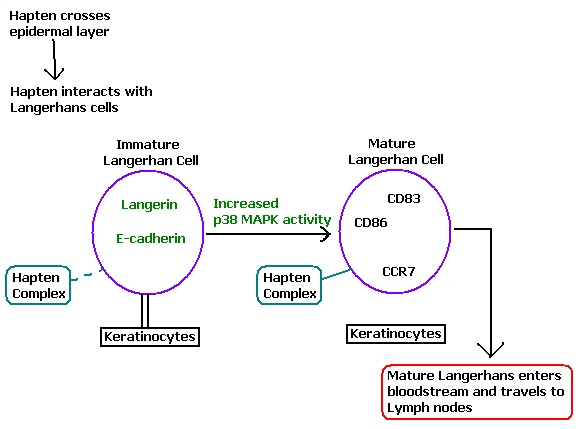

Approximately forty percent of the population experiences some form of skin contact dermatitis, characterized by the development of rashes or discolorations, and itching or burning sensations. Allergic response to prolonged wearing of certain types of jewelry is one of the most common causes of skin contact dermatitis, affecting 10-15% of the population and second only to fragrance allergies (1,2). While a variety of metals can cause skin contact dermatitis, the most common culprit in jewelry allergies is nickel sulfate (NiSO4), a common additive in faux gold plating because of its shine and resistance to corrosion. Why some people experience an allergic reaction to NiSO4 while others do not is an interesting problem for dermatologists and researchers.

The Immune Response
The immune response that characterizes contact dermatitis is initiated when skin allergens (called haptens) diffuse into the epidermis where they complex with carrier proteins found just under the skin (3,4). These complexes interact with immature dendritic carrier cells (named for their resemblance to dendrites rather than any relation to the neural system) called Langerhans cells and initiate maturation. The interaction of hapten complexes with Langerhans cells causes an increase in some MAPK activity (4,5). MAPKs are Mitogen-Activated Protein Kinases that initiate cell division. The NiSO4 hapten complex itself activates a p38 MAPK that responds to stress stimuli.
During p38 MAPK-initiated maturation, adhesion molecules such as E-cadherin and langerin disappear. These adhesion molecules bind Langerhans cells to keratinocytes, the main cell type of the outer skin layer, and their loss allows mature Langerhans cells to enter the bloodstream and migrate to the lymph nodes. Meanwhile, chemokine receptors such as CD83, CD86 and CCR7 are upregulated (4,5). Once mature Langerhans cells reach the lymph nodes, their chemokine receptors respond to chemokines released by T-cells. The T-cells then migrate back to the site of hapten entry and phagocytose (engulf) affected cells and foreign bodies.
Chemokines are proteins that act as chemical signals to help direct cell migration (6). When released by T-cells in the lymph nodes, chemokines interact with mature Langerhans cells, and the hapten complex associated with them, to activate appropriate T-cells. Chemokines back at the site of infection act as markers to show T-cells where they need to go and are important in communication between white blood cells. The rash common in skin allergies is due to the presence of chemokines.

Allergic and Non-allergic Characteristics
Studies of allergic patients and non-allergic individuals have found differences in chemokine release by CD4+ T-cells (T-cells characterized by the glycoprotein marker CD4+) and in the response of CD8+ T-cells. In allergic patients, CD4+ T-cells release higher levels of interferon-γ, a vertebrate protein produced in response to foreign agents and important in preventing the replication of infected cells. They also release lower levels of interleukin-10, a regulatory protein. CD8+ T-cell activity is not detected in non-allergic individuals (7). Basically, everyone is allergic to NiSO4 but genetic differences control sensitivity and the manner in which the body responds. Though there are treatments for the itching and burning of contact dermatitis rashes, the only cure is removal of the source of irritation.

Vocabulary
Skin Contact Dermatitis—An allergic response to substances through skin contact and characterized by rash, discoloration, itching and/or burning.
Lymph Nodes—Small organs found throughout the body and contain immature T-cells and B-cells (another type of cell important in the immune response).
T-cell—A type of white blood cell important in the immune response. Exact function is determined by glycoproteins found in their cell membrane and cytokines released.
CD8+/CD4+—“Cluster of Differentiation 8” and “Cluster of Differentiation 4.” Major glycoproteins found in the membrane of T-cells and used to classify T-cells. CD8+ T-cells tend to have an aggressive immune response function while CD4+ T-cells tend to have more of a regulatory function.
Phagocytosis—Process where one cell engulfs and breaks down another. Major immune response function of T-cells.
Langerhans Cell—Dendritic Cells (named for their shape) found in the epidermis that take up and process allergen complexes, and which are able to activate T-cells.
CD83, CD86, CCR7—Co-stimulatory signaling chemokine receptors found on Langerhans cells.
Hapten—A small molecule that causes an immune response when attached to a larger protein.
Cytokine—A type of glycoprotein (protein with sugars bound to it) important in cell signaling.
Chemokine—A type of cytokine that aids cellular migration by acting as a chemical signal for where to go.
Interferon—A type of cytokine that aids in the immune response by preventing DNA/RNA replication and cell division.
Interleukin—A type of cytokine that aids in the immune response by enhancing T-cell function through a variety of mechanisms. Some interleukins regulate differentiation and proliferation of T-cells or other protective cells, while others aid in cell migration.
MAPK—Mitogen-activated protein kinase. A protein important in the regulation of a variety of cellular functions including mitosis, differentiation and survival/apoptosis. They are activated by the presence of mitogens. P38-MAPKs respond to stress stimuli caused by certain haptens including nickel sulfate.
Mitogen—A chemical that initiates cell division
Resources
References
(1) Gawkrodger, D.J., Lewis, F.M., Shah, M. Contact Sensitivity to Nickel and Other Metals in Jewelry Reactors. J. Am. Acad. Dermatol. 43, 31-36 (2000).
(2) Schafer, T., Bohler, E., Ruhdorfer, S., Weigl, L., Wessner, D., Filipiak, B., Wichmann, H.E., Ring, J. Epidemiology of Contact Allergy in Adults. Allergy 56, 1192-1196 (2001).
(3) Miyazawa, M., Ito, Y., Yoshida, Y., Sakaguchi, H., Suzuki, H. Phenotypic Alterations and Cytokine Production in the THP-1 cells in Response to Allergens. Toxicol. in Vitro 21, 428-437 (2007).
(4) Boisleve, F., Kerdine-Romer, S., Rougier-Larzat, N., Pallardy, M. Nickel and DNCB Induce CCR7 Expression on Human Dendritic Cells through Different Signaling Pathways: Role of TNF- α and MAPK. J. Invest. Dermatol. 123, 494-502 (2004).
(5) Boisleve, F., Kerdine-Romer, S., Pallardy, M. Implication of the MAPK Pathways in the Maturation of Human Dendritic Cells Induced by Nickel and TNF-α. Toxicology 206, 233-244 (2005).
(6) Cruz, M.T., Goncalo, M., Paiva, A., Morgado, J.M., Figueiredo, A., Duarte, C.B., Lopes, M.C. Contact Sensitizers Downregulate the Expression of the Chemokine Receptors CCR6 and CXCR4 in a Skin Dentritic Cell Line. Arch. Dermatol. Res. 297, 43-47 (2005).
(7) Cavani, A., Mei, D., Guerra, E., Corinti, S., Giani, M., Pirrotta, P., Girolomoni, G. Patients with Allergic Contact Dermatitis to Nickel and Nonallergic Individuals Display Different Nickel-Specific T Cell Responses. Evidence for the Presence of Effector CD8+ and Regulatory CD4+ T Cells. J. Invest. Dermatol. 111, 621-628 (1998).
Ahnlide, I., Bjorkner, B., Bruze, M., Moller, H. Exposure to Metallic Gold in Patients with Contact Allergy to Gold Sodium Thiosulfate. Contact Derm. 43, 344-350 (2000).
Curtis, A., Morton, J., Balafa, C., MacNeil, S., Gawkrodger, D.J., Warren, N.D., Evans, G.S. The Effects of Nickel and Chromium on Human Keratinocytes: Differences in Viability, Cell-associated Metal and IL-1α Release. Toxicol. in Vitro 21, 809-819 (2007).
“Chemokine.” “Cytokine.” “Interferon.” “Interleukine.” “Langerhans Cells.” “T-cell.” Wikipedia.org. Accessed October 20, 2007.
Author: Megan Love Huffman
- Alzheimer's 1 2
- Antibiotics
- Antifouling Paint
- Arthritis
- Ayurvedic Medicine
- Breast Feeding
- Cancer Therapy
- Cattle Feed
- Cerebral Ischemia
- Chelation Therapy
- Chernobyl
- Chicken Feed
- Chocolate
- Cigarettes
- Coal 1 2
- Copper Mining
- Cremation
- Diabetes
- Electronic Waste
- Hat Making
- Hard Metal Disease
- Hybrid Cars
- Imaging 1 2 3 4
- Industrial Pollution
- Jewelry Allergy
- Lead Poisoning
- Lewisite
- Magnetic Particles
- Makeup
- Mountain Top Removal
- MRI Imaging
- Neurotoxicity
- Nuclear Power
- Nuclear Weapons
- Ouch Ouch Disease
- Peripheral Neuropathy
- PET Imaging
- Photodynamic Therapy
- Phytoremediation
- Pregnancy
- Radioactivity 1 2
- Seafood
- Sunscreens
- Tattoos
- Vaccines
- Wound Healing